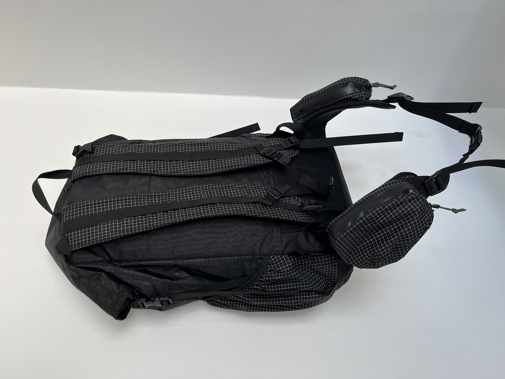
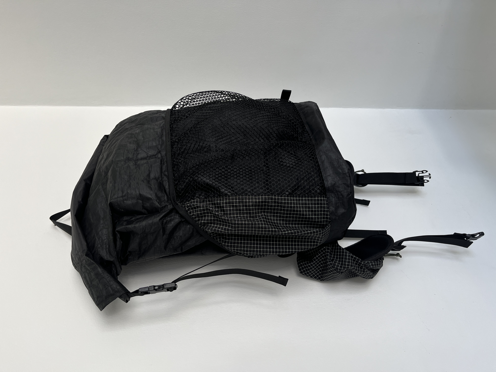
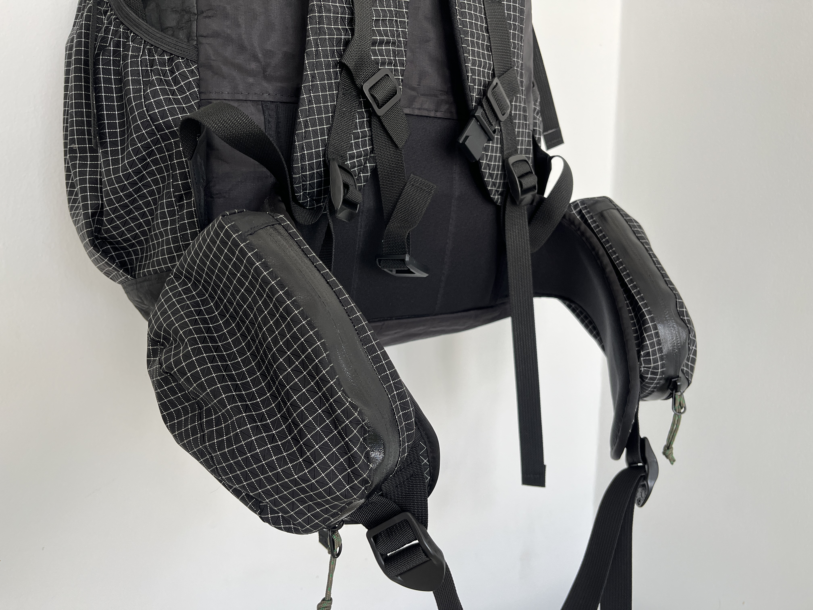
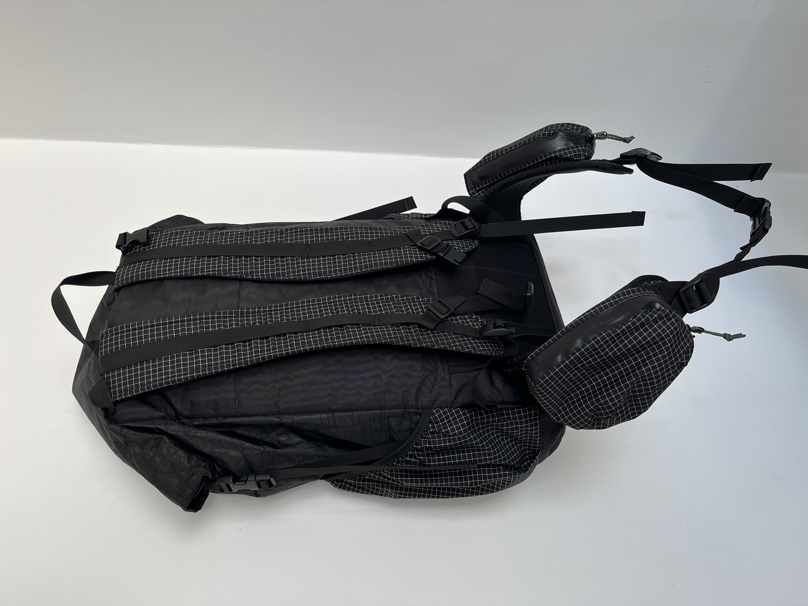
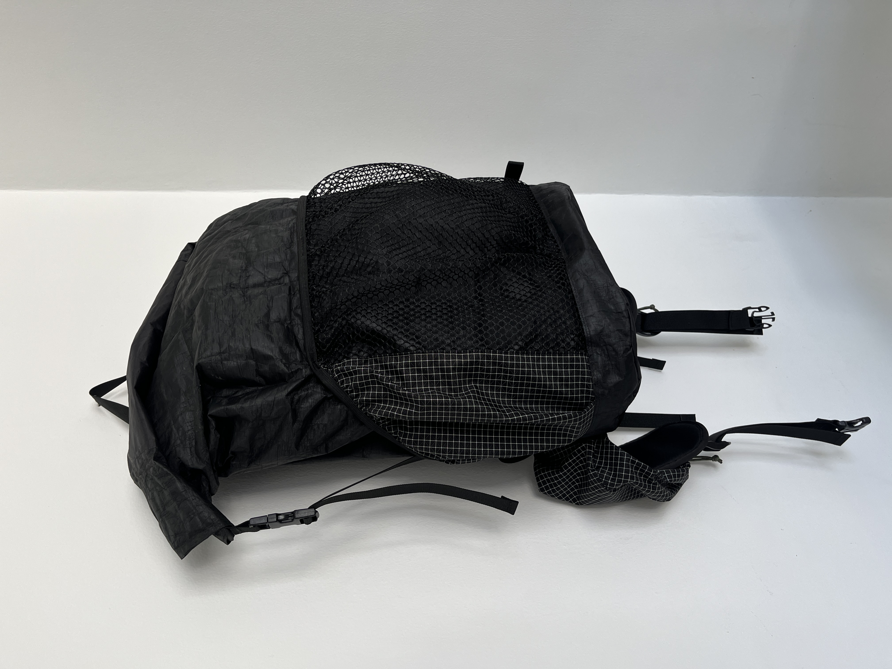
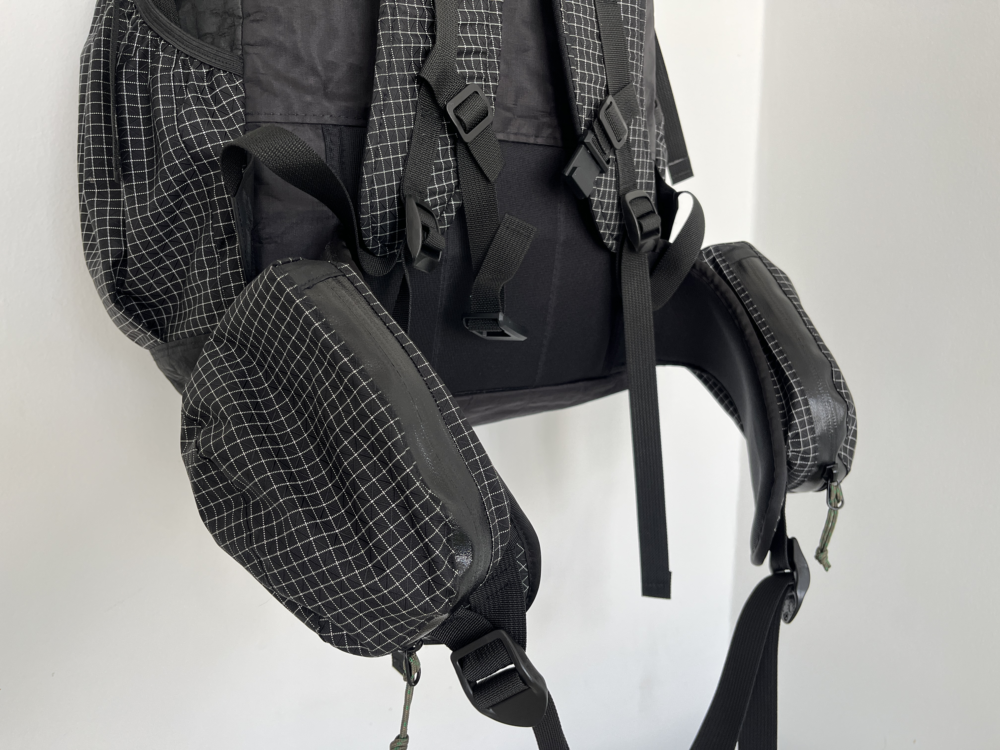

spotify recommends
seattle, WA feb, 2024
For a period of time, the Spotify recommendations were overly personalized to the point it provided songs you already listened to rather than introducing you to new music. I developed a web application which utilizes the Spotify API to recommend songs related to an artist. The user inputs an artist name and a playlist is generated with songs controlled for popularity. The songs can be previewed and either removed or added to the suggestion seed to make the playlist more similar to that song. New songs can be populated into the playlist until it is a desired length. The completed playlist can then be named and saved to the users Spotify account.
This project is not currently live. It was created to demonstrate a proficiency various skills including developing full-stack python apps, RESTful APIs, authorization schemas, and application prototyping/testing.
 




